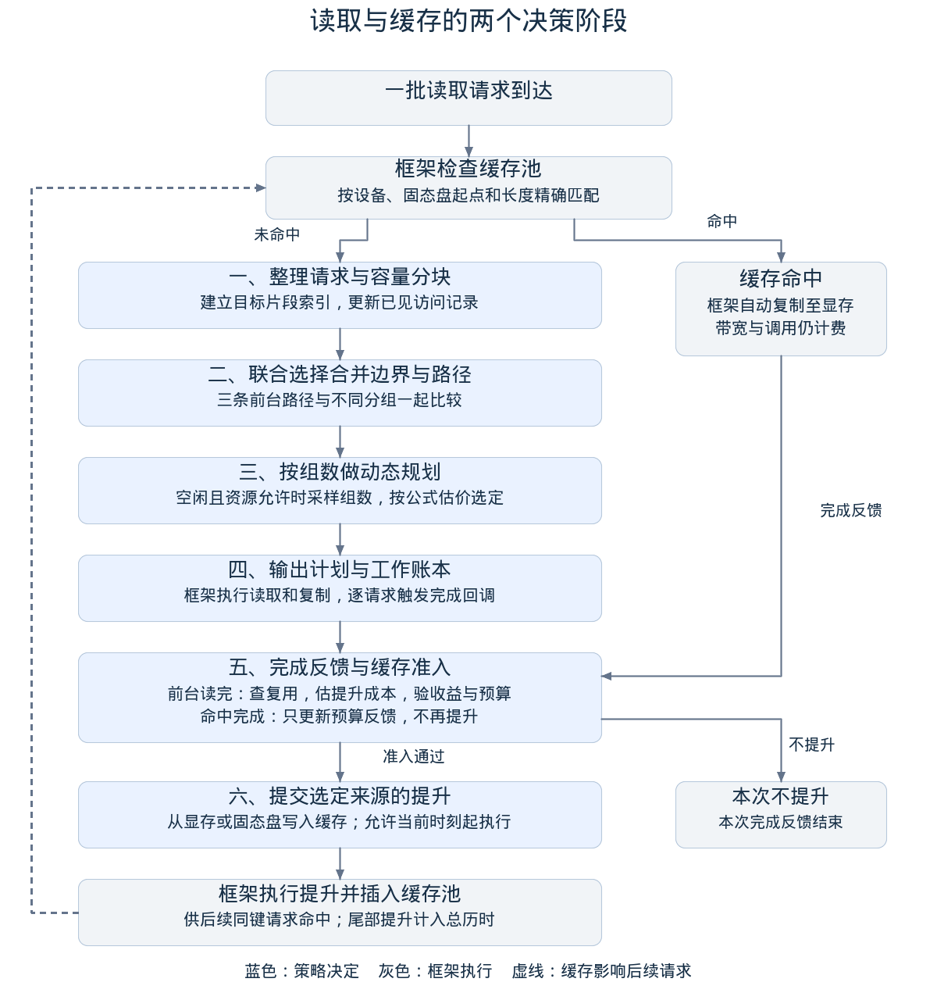

NDS 解题方案与验证报告
观察窗口调度与复用感知缓存
设计依据与优化评述
核心判断：调度要同时决定“搬多少、分几次、走哪条路、是否为未来再搬一次”，用整条Trace的综合成本衡量取舍。 我们据此采用区间分组与路径联合规划、有限观察窗口比较、复用感知缓存准入。本文解释为什么这样设计；具体执行顺序见算法设计。
一、设计依据：目标、约束与可用信息
依据是题面与固定官方SDK的计费、性能桶和执行语义。目标为 J = c_t × T + C + G：c_t是每微秒的成本，T是整条Trace历时，C、G分别是累计CPU、NPU调用成本。合法覆盖、对齐、容量、槽位和复制并发是硬约束。策略只使用已到达请求、历史与当前状态。
比较两个方案时，判断的是 ΔJ = c_t × ΔT + ΔC + ΔG < 0，其中Δ表示“新方案减原方案”。少读字节、少调用、高命中率都是改善J的可能手段，不能单独代替J。T包含共享资源上的实际等待和尾部PROMOTE，不能把各传输的耗时直接相加。
公开优化分按每条输入的参考J/方案J封顶后加权。因此本文分别报告官方得分、逐例J和扩展成本回退；官方冻结参考成本与可运行的贪心baseline是两个不同对照。
二、关键性质与观察：怎样推出策略
下表前三列来自规则或成本模型推导；最后一列是本实现据此采取的措施，不表示已有全局最优性证明。
| 关键性质 | 观察 | 得出的结论 | 对应设计 |
|---|---|---|---|
| 每个操作、SSD命令及复制项分别收费 | 碎片多时，调用成本可以超过传输时间成本 | 合并的价值包含减少固定费和调用数 | 在合法范围内共享读取与多目标复制 |
| 三条路径的对齐要求、性能桶和资源占用不同 | 多一步复制可能换来更合适的带宽或更少的槽位等待 | 没有对所有状态都成立的固定路径排序 | 联合比较分组与DIRECT、AGGREGATE、FALLBACK |
| 速率随数据大小和活动并发变化 | 合并变大也会减少并发；小任务各自最快不代表整批最快 | 分组与并发、流水相互影响 | 先做区间规划，再用有限观察窗口比较整体计划 |
| 临时池和请求槽位会被占用到相关阶段结束 | 最大块可能长时间阻塞其他工作；大请求可能放不进池 | 合法性与资源周转必须进入规划 | 按容量分块、保留依赖，限制拆分请求跨所有者合并 |
| PROMOTE先付费，命中仍需H2D；TTL和LRU限制存活 | 重复出现不等于值得缓存，提升成功也不等于后来复用 | 缓存是带风险的投入 | 检查复用、新鲜度、净收益和预算，再选择提升来源 |
| 未来请求不可见 | 同一已知前缀之后，热点既可能持续，也可能消失 | 在线策略不能保证每次提升正确 | 只用历史证据，限制投入，并公开回退与近似边界 |
三、路径冗余：哪些是选择空间，哪些是可省成本
这里区分两层含义。可替代路径允许同一逻辑读取通过不同资源完成，是调度空间；冗余工作是重复读字节、额外调用或没有后续收益的搬运，是优化对象。不能因为一条路径多了一跳，就断言它应被删除。
| 维度 | 可能增加的成本 | 本方案的处理与边界 |
|---|---|---|
| 路径上的额外复制 | AGGREGATE增加D2D，FALLBACK增加H2D及中转占用 | DIRECT是合法候选时参与比较；仍保留另外两条路径以适应对齐和资源竞争 |
| 重复物理读取 | 同批同卡请求的SSD范围重叠，分别读会重复搬字节 | AGGREGATE/FALLBACK可共享候选合并区间；目标数据仍逐请求完整覆盖 |
| 对齐扩读 | 为满足512B读取边界而多读首尾字节 | 按物理字节估计读取成本、按有效字节复制；只合并满足对齐连接条件的区间，不任意跨大间隙读取 |
| 重复控制开销 | 对每个iov分别建立操作和复制项 | 在同一批次的合法分组内，用一条读取和多目标映射减少调用 |
| 无效后台搬运 | PROMOTE_SSD重新读SSD；任一提升若未被复用，只有投入 | 用新鲜度、收益和预算筛选；不能预知未来，仍可能误判 |
例如，三个相邻请求分别执行“一读一复制”的FALLBACK，CPU成本为3×(8+2+1)=33；合法合并成一读一次多目标复制后为11，NPU成本由3变1。省下的是调用开销，是否降低J还要看整体时间。前台合并不会自动把整个合并区间变成一个缓存项。
四、相对官方baseline，具体改在哪里
对照为固定SDK默认的GreedyBaseline，不是冻结参考解。它逐iov生成操作：对齐走DIRECT；否则，在扩读比不超过1.5且放得进临时HBM时走AGGREGATE，其余走FALLBACK。同键未命中计数达到2后，在完成回调中尝试一次PROMOTE_HBM；默认不重新提升该键。
| 维度 | 官方baseline | 我们的方案 | 主要取舍 |
|---|---|---|---|
| 组织粒度 | 逐iov，缺少跨请求合并 | 先建立目标映射，再分块和合并同批同卡区间 | 降低调用与重复读；限制组大小以控制资源占用 |
| 路径选择 | 按对齐、扩读比、HBM容量固定分支 | 区间动态规划联合选择分组边界与路径 | 将时间、CPU/NPU及资源压力放在同一估值中 |
| 整体竞争 | 不比较多组计划共同执行的成本 | 对少量候选做有限观察窗口试算 | 补充局部估值；增加决策开销且仍有窗口误差 |
| 缓存准入 | 第二次未命中后尝试提升 | 要求跨时刻复用、新鲜度、容量证据、正净收益及足够预算 | 减少无效提升，也可能错过真正热点 |
| 提升来源与再准入 | 默认固定HBM来源，每键最多尝试一次 | 比较SSD与源卡D2H压力；失效后重新满足条件可再准入 | 避免单一路径限制；排队和未来收益仍是估计 |
这些机制互相影响：前台合并已经降低了重读成本，缓存收益必须按选中计划重新估计；不能继续把baseline昂贵的逐iov成本当成每次命中都能节省的成本。
五、多维度证据与结论范围
以下均来自同一冻结策略的已有记录，没有为本文重新调参。完整数据见官方逐例对照、扩展逐例对照和验证报告。
| 评价维度 | 实测证据 | 能得出的结论 |
|---|---|---|
| 官方目标 | 自动分67.1981→89.9792/90；39条中35条J更低、4条持平 | 相对官方贪心有明确公开集收益；不是隐藏集成绩 |
| 调用与时间 | read_direct_high：CPU 40960→320，T 23252→1163微秒，J 64212→1483；SSD字节不变 | 不必减少物理字节，也能通过组织方式降低J |
| 时间与成本的区别 | read_aggregate_high：T 34300→33995微秒，CPU 81920→2800，NPU 20480→280 | J下降72.88%主要体现在调用项；不能称为同幅度传输加速 |
| 缓存价值 | promote_ssd_mid：提升256→0，命中1432→0，但J 29594→8529 | 在该输入上，减少缓存投入比追求命中更多更划算；物理SSD读取反而增加 |
| 通用性 | 扩展177条中160条更优、17条更差；冻结后独立24条中23条更优、1条更差 | 有跨负载收益，也存在回退；整体最大回退22.01%，独立组最大12.61% |
| 正确性与工程代价 | 438条各三次官方回放通过；所测最大决策1321.250ms、峰值RSS 2886MiB | 所测输入满足规则和资源上限；不外推为任意规模或真实硬件保证 |
表中的案例是整体策略对照，用于展示成本如何变化；没有逐模块关闭的消融实验，不能把全部收益独立归因于某一个机制。时间成本、调用费、字节量和缓存指标应联合阅读。
方案的价值在于把分组、路径与缓存放在统一成本口径下协调。代价是比贪心更复杂，且候选块长、搜索范围和观察窗口有限；窗口还省略部分后台流量。现有证据支持所测范围内的综合收益，不支持“全局最优”“每例必胜”或“已证明无过拟合”。后续应冻结策略，用新的负载家族测试最差回退，并通过消融辨别各机制的独立贡献。
算法设计：整体流程、分阶段决策与运行示例
一、整体方案：先完成当前读取，再决定是否为后续复用建立缓存
这道题的输入是一段按时间到达的读取请求记录，称为Trace。每个请求指定SSD上的数据范围和目标计算卡上的HBM位置。我们的目标是在容量、对齐、并发和时间限制内，把所有请求正确完成，并尽量降低整条Trace的时间与调用成本。
优化目标是 J = time_cost_per_us × TraceTime + CPUCost + NPUCost。当前公开时间系数为1；调用成本按官方单价和次数累计，不是本机执行时间。TraceTime包含尾部已提交PROMOTE的完成时间，因此后台工作也会影响总成本。
方案由两个相互衔接的决策阶段组成。请求到达时，安排当前数据怎么搬；请求完成时，判断是否值得额外搬一份到缓存池。 前者决定分块、合并、路径和依赖，后者决定是否PROMOTE及其来源。官方模拟器负责真正执行任务、分配共享资源、处理缓存命中和计算最终成本。
前台采用“先快速规划，再有限比较”的方法：用区间动态规划生成合法的分组与路径方案，再把少量候选放到已观察到的批次窗口中比较，选择当前要提交的计划。后台采用“有复用证据才投入”的方法：只在需求仍然新鲜、缓存有容量、预计命中有收益且预算足够时提升。两部分使用同一套成本口径，避免前台省下的成本被无效后台工作抵消。
设计依据是：固定调用费让合并有价值，大小与并发相关的性能让路径必须联合比较，资源占用让局部最优不等于整体最优，而未知未来让缓存必须控制投入。设计依据与优化评述集中说明这条论证链、相对官方baseline的改进及实测边界；本文展开执行步骤。

图中蓝色步骤由我们的策略决定，灰色步骤由官方框架执行。不同请求可以处于不同阶段：前一个请求正在PROMOTE时，后一个请求仍可到达并进行前台读取。
| 决策机会 | 策略收到什么 | 策略返回什么 |
|---|---|---|
on_submit | 当前批次未命中的请求、资源和在途状态 | 当前批次的前台操作及传输依赖 |
on_iocb_complete | 刚完成的一个请求、当前运行状态 | 一条针对该请求的PROMOTE，或不提升 |
框架先查缓存，再把未命中部分交给策略。命中的请求由框架执行“缓存池→HBM”的H2D复制，也会消耗带宽、并发名额和调用成本。策略不能查看未来请求，不能任意撤销已提交操作，也不能自行宣布完成时间。PROMOTE只能针对刚完成的完整请求提出；当前实现允许它从当前时刻起执行，并未主动预约一个更晚的启动时刻。
下面按一次决策实际经过的顺序展开：第二节解释前台五步，第三节解释完成后的缓存决策，第四节把它们串成一个例子，第五节回到整体效果与限制。搜索上限、复杂度和代码定位放在末尾附录。
二、请求到达后的前台流程
2.1 看清请求和当前负载，建立后续计算的依据
一个请求（IOCB）描述一个SSD区间，但目标可能分散在多个HBM片段（iov）。因此，不能只把请求看成一个“长度”，还要知道切下来的每段数据应该写到哪里。程序先为iov建立累计长度索引，后续切分时通过二分定位相关片段，只输出真正相交的目标区间。
同一阶段还记录请求的设备、到达时刻和历史访问情况，读取当前SSD及各卡复制资源上的活动任务，并删除已经全部完成的观察批次。索引供本次前台规划使用；访问记录会在完成回调中用于缓存判断。两类状态在这里建立，但此时不会因为“看起来重复”就提前PROMOTE。
2.2 按容量分块，把大请求变成可合法搬运的片段
大请求可能放不进临时HBM或DDR池，需要分块后循环复用缓冲区。程序先以2MiB为候选块上限生成一份计划；普通规模输入还会比较8MiB块上限。候选上限并不意味着每块一定那么大，实际长度还受请求末尾、对齐和可用池容量约束。
对不能DIRECT的片段，物理SSD读取可向512B边界扩展，但复制到目标HBM时只写有效数据。拆分边界尽量避免制造很小的尾块。需要暂存的物理范围必须能由对应临时池容纳。
这一步得到的是带有来源、目标映射和对齐属性的片段集合，还没有决定哪些片段合成一个操作。较小块有利于流水和释放缓冲，较大块有利于减少命令与固定费用，下一步会比较这些取舍。
2.3 用区间动态规划，同时选择合并边界和传输路径
程序按设备和SSD起点排序片段，从每个位置向后查看最多128个片段，枚举可以组成一组的连续区间。候选组必须位于同一张卡；SSD范围须按本实现的对齐连接条件相接或重叠，且不能超过块上限。被拆分的IOCB不与其他IOCB共享同一个操作，防止多个操作交叉占住请求槽位形成循环等待。
对每个候选组，程序比较三条路径。三条路径都可以服务多个当前请求，“合并”不是AGGREGATE的专属能力。
| 路径 | 数据路线 | 本实现怎样判断可用 |
|---|---|---|
| DIRECT | SSD→目标HBM | 各逻辑交集满足512B对齐，合并区间无重叠且首尾相接，请求所有者数不超过槽位上限 |
| AGGREGATE | SSD→临时HBM→目标HBM | 合并物理范围能放进临时HBM，目标映射完整，请求所有者数不超过槽位上限 |
| FALLBACK | SSD→DDR→目标HBM | 合并物理范围能放进DDR，目标映射完整 |
候选成本由SSD服务时间、必要复制时间和调用成本估计组成。SSD按全局活动情况估计，复制按目标卡、复制类型及硬并发限制估计；缓冲占用也进入路径代理估值。这里计算的是用于快速筛选的局部成本，不是最终官方J。
动态规划的含义是：已经处理好前面若干片段后，比较“接下来只处理一个片段”和“把接下来的几个片段合并处理”，选累计估计成本较低的分组方式。其递推可以写成：
best[0] = 0
best[j] = min(best[i] + Estimate(片段i到j之前的候选组, 路径))回溯最优转移后，得到一整批请求的分组边界和路径。这样不必把“先合并、再选路径”拆成两套互相矛盾的规则，也不会固定认为“越大越好”或“对齐就一定优先合并”。
2.4 在有限观察窗口中比较，修正逐组估计看不到的竞争
逐组估计适合快速规划，但若同时提交很多组，它们会竞争SSD、请求槽位和临时池。例如，某条路径单独看很便宜，却可能占住槽位，让其他批次迟迟不能开始。为观察这种整体影响，程序在计算预算允许时进行第二轮比较。
候选来自两个块上限下的规划结果，以及在合法条件下偏向AGGREGATE或FALLBACK的路径改写。DIRECT操作保持DIRECT，无法满足目标池或槽位限制的组保持原路径。候选数量固定有界，不进行无限参数搜索。
比较使用官方模拟器，但只重建当前批次和有限数量的已见批次。历史候选来自仍有前台请求未完成的批次，最多保留32批，再受iov和操作预算裁剪。为了比较路径偏好的整体效果，局部试算可能改写观察窗口内旧计划的路径；这只是反事实试算，不会改写真实执行中已经提交的旧操作。最后只输出当前批次的选中计划。
窗口省略了更早的工作、缓存命中搬运和后台PROMOTE，也不是从完整实时状态恢复执行。因此，该比较仍是近似。普通路径估值会读取当前活动状态，但不能把第二轮试算称为对当前系统所有竞争的精确回放。输入过大时跳过这一轮，保留已有合法计划。
2.5 输出操作和依赖，并为完成后的缓存判断记账
每个最终分组生成一个operation。当前实现的DIRECT组包含一条SSD传输项；AGGREGATE或FALLBACK组包含一条SSD传输项和一条带多个目标片段的D2D或H2D复制项。复制明确依赖本组SSD阶段完成，不能在数据尚未读入时先执行。
合并与并发在这里分开表达：合并决定一个operation包含哪些请求；并发取决于哪些传输项已经启动、尚未完成。把三个读取合成一个大读取，会把这组工作的SSD传输项数变成一个；多个组仍可并行或流水执行。group_id只是组织标识，不会自动形成资源独占或减少调用计费。
模拟器的实际并发度按活动传输项统计：全局SSD把各卡的前台SSD阶段与PROMOTE_SSD一起计数，复制则按卡和H2D/D2H/D2D类型分别计数。未启动的排队项不计入。请求槽位、CPU核数、累计调用次数以及一个operation包含多少请求，都是不同概念。复制并发上限限制能否启动；当前实际并发度与数据大小共同决定性能桶和传输速率。
只有选中计划参与缓存账本。共享SSD工作按物理字节估计，复制按有效字节估计，组内调用成本按有效字节分摊到请求；全局SSD工作与单卡复制工作使用不同并行范围。这个账本用于估计后续命中能省下多少工作，不修改官方计分器。返回计划后，由框架执行、释放缓冲并逐请求触发完成回调。
三、请求完成后的缓存流程
3.1 先区分本次完成来自缓存命中，还是策略安排的前台读取
缓存命中的请求没有进入我们的on_submit，因此没有策略持有的前台工作记录。它完成后，程序按上次准入时估计的单次命中收益更新后续提升预算，并限制累计额度不超过上次提升成本，然后返回“不提升”。
对于由策略安排的未命中读取，程序取出第二节留下的工作账本，再检查是否值得缓存。这个区分避免把一次已经命中的访问误当作新的SSD读取，也避免对它重复发起提升。
3.2 先检查复用证据是否仍然有效
每个缓存键是“设备、SSD起点、读取长度”，不是HBM地址或请求编号。该键维护跨时刻访问记录、平均访问间隔、间隔波动、最近需求及有复用证据的字节距离。同一时刻批量出现的重复请求，不被当作多个独立周期的复用证据。
准入先排除以下情况：没有跨时刻重复、整个对象放不进缓存池、访问间隔达到TTL、最近需求已经过时、有复用证据的字节距离超过容量范围、同键已经缓存或正在提升。新鲜度允许的时间范围由平均间隔和两倍间隔绝对偏差共同决定，以容忍已经观察到的到达抖动。
这些检查先回答“现在还有没有理由为这个对象投入”。即使以前读过多次，如果它在前台排队太久、热点已经变化，完成时仍可能被拒绝。字节距离只由再次出现且可放入池中的对象推进，用来降低一次性扫描对热点证据的干扰；它仍然是工作集压力的近似。
3.3 再检查命中收益与提升预算
缓存命中仍需一次H2D复制及CPU、NPU调用。程序估计一次未来命中的边际收益：省去的前台读取、复制和调用成本，减去命中本身的搬运和调用成本。若收益不为正，就不值得为这种访问方式建立缓存。
即使单次命中看起来有收益，也不能默认未来会命中很多次。程序用已经观察到的同键读取工作量形成提升预算：只记尚未入账的不同到达时刻；过时证据会清除。预算足以承担估计的提升成本时才准入，接受后消费预算。它相当于限制后台投入规模的经验账本，不是对未来命中次数的保证。
这两道检查分别回答“命中一次是否有用”和“现在投入是否足够谨慎”。它们都通过后，才会真正返回PROMOTE决策。
3.4 选择提升来源，再交给框架执行
PROMOTE有两个来源：从已完成请求的HBM通过D2H写入缓存池，或从SSD重新读取后写入缓存池。程序比较两条路径的预计就绪成本，考虑全局SSD负载，以及源卡D2H的活动、排队和并发上限。来源选择考虑排队等待；准入使用的新增服务成本则避免把同一排队等待重复收费。
当前实现给PROMOTE较低优先级，最早启动时间设为当前完成时刻。它允许尽快启动，但不保证立即启动，也不表示只使用空闲带宽。PROMOTE_SSD会与前台SSD读取共享资源；PROMOTE_HBM使用按源卡单独建模的D2H资源。成功插入缓存后，后续完整同键请求才可能命中；TTL、LRU和实际驱逐由框架管理。
PROMOTE是服务未来访问的可选任务，当前读取不必等它完成才算完成。不过，固定SDK会等全部已提交传输结束才结束Trace，尾部PROMOTE会计入总历时。若后面没有再访问该对象，这次投入就可能只有成本，没有收益。
3.5 提升成功后，由框架按TTL和容量管理缓存
TTL到期与容量不足是两种独立的失效原因，可理解为“或”，不是必须同时满足。TTL从PROMOTE成功入缓存时开始计算，过期后不能再命中，即使池子仍有空位。一次命中更新LRU最近访问时间，但不延长TTL。
新对象插入时，框架先检查对象是否超过整个池容量；超过则拒绝缓存。能够放入的对象先触发过期清理，再检查“现有缓存占用＋新对象长度”是否超过容量。如果仍超出，就反复按LRU淘汰最久未访问的对象，直到空间足够。因此，一个尚未到TTL的对象也可能因给新对象腾位置而被淘汰。
我们的策略控制是否发起PROMOTE，从而影响插入哪些对象；不直接指定驱逐谁，也不修改TTL或LRU规则。提升准入中的工作集和新鲜度判断，正是为了减少“刚花成本搬进缓存、很快又被淘汰或失效”的投入。
四、用一个例子串起两个决策阶段
以下为机制示意，假设路径比较和缓存准入满足文中条件；它不表示程序对任何三个请求都会输出相同结果。
某批次包含A、B、C三个请求，都发往同一张卡，SSD范围分别为0—4KiB、4—8KiB、8—12KiB，目标HBM位置分散且不满足DIRECT对齐。它们能放进临时池。
第一阶段，程序建立目标片段索引，不需要因容量继续切分；然后比较“分别读取”“合并AB再处理C”“合并ABC”等分组及AGGREGATE/FALLBACK路径。假设观察窗口比较后选择一个合并FALLBACK操作，那么输出是一条12KiB的SSD→DDR传输，以及依赖它完成的一条多目标H2D复制。A、B、C仍分别得到自己的4KiB，并没有变成一个请求。
这次合并FALLBACK的CPU成本为固定费8、SSD命令费2、H2D调用费1，共11；NPU调用成本为1。如果三者分别用同样的FALLBACK步骤处理，则CPU成本为33、NPU成本为3。是否真正降低J，还取决于大块读取、复制及等待对整体时间的影响。
第二阶段，每个IOCB完整完成后分别进入缓存判断。第一次观察到它们时，缺少跨时刻复用证据，程序不提升。之后A的数据再次被请求并读完，若新鲜度、收益和预算等条件均满足，程序才为A的完整4KiB发起PROMOTE。虽然此前A、B、C合并读取，缓存键仍按各自的完整请求建立，不会自动把整个12KiB合并区间作为一个缓存项。
若A的PROMOTE已经完成、缓存未过期且未被驱逐，后续同卡、同SSD起点、同长度的A请求由框架直接执行缓存池→HBM的H2D复制，不进入前台规划。它仍占用该卡H2D资源并产生调用成本。HBM里曾经存在A的数据本身不构成缓存命中。
这个过程把前台计划和后台投资连接起来：前台先减少当前工作量，再用实际选中计划估计缓存价值；缓存命中改变后续进入策略的请求集合与资源负载，策略继续基于新的可见状态决策。
五、整体效果、设计取舍与适用范围
方案的核心分工是：区间规划解决“哪些请求一起搬、走哪条路”，观察窗口解决“这些计划一起执行时是否相互阻塞”，复用准入解决“是否值得为后续访问再投入一次搬运”。 三者共同服务整条Trace的J，任何单项的局部收益都不能替代总成本判断。
大块合并能减少调用，却可能占用缓冲和槽位更久；更多并发可能提高带宽利用率，也可能增加竞争；缓存能省SSD读取，却会产生提升成本、H2D命中搬运和驱逐。这些取舍都通过同一成本口径及官方独立回放评估，而不是只追求命中率、最大合并块或最短单次读取。
当前冻结策略在官方39条输入上自动评分89.9792/90，438条输入各三次运行和回放通过。详细的逐例成本、回退、规模和资源结果见验证报告。这些结果支持所测范围内的合法性和收益，不证明每个输入都优于贪心，也不代表真实硬件加速。
方案仍有明确限制：窗口未包含全部后台活动，候选块长和分组范围有限，缓存未来收益只能估计。没有按文件名、题号或种子分支，但有限测试也不能证明不存在分布依赖。更大的输入或新负载应冻结策略后留出新家族验证，保留失败与成本回退，而不是反复用同一留出集选择参数。
附录A：实现预算与复杂度
以下数值控制搜索和状态规模，不是按测试编号匹配的特例。
| 项目 | 当前实现 |
|---|---|
| 前台块上限候选 | 2MiB、8MiB；实际受对齐与池容量约束 |
| 区间向后搜索窗口 | 最多128个片段 |
| 普通候选比较入口 | 当前请求数不超过1024、iov不超过2048、初始操作数不超过2048 |
| 历史观察窗口 | 最多32批；加入历史时总iov不超过32768、累计初始操作预算不超过512 |
| 成本结果复用 | 无历史前缀且操作形状一致时复用，最多64项，每项签名不超过32768个整数 |
| 微批枚举 | 保守空闲、无缓存或提升历史、最多6个完整块和256个iov；每次规划至多3072个候选，两个块上限可各触发一次 |
| 访问历史队列 | 最多131072条更新记录 |
微批枚举只在受限候选集合内精确。成本结果复用的是相同操作形状的局部试算，不是把不同实时队列的成本视为相同，也不读取用例标识。
设V为总iov数、B为片段数、W=128、L为最终目标映射交集数。索引构建为O(V)，排序为O(B log B)，区间候选最多O(BW)，所有者集合维护还包含对数因子，映射约为O(B log Vmax + L)。局部模拟耗时另取决于事件和活动传输数，不能把整个策略简写为O(BW)。
观察窗口和历史记录有界，但SDK输入输出、在途请求和缓存状态仍占内存；本方案不声称恒定内存或任意规模安全。
附录B：从文字流程定位到代码
唯一策略文件是03_程序/player/solution.cpp。可按函数名搜索，不必从头逐行阅读。
| 文中阶段 | 代码位置或标识 |
|---|---|
| 目标片段索引和DIRECT合法性 | IovIndex、direct_ok |
| 快速路径成本估计 | estimate |
| 请求到达、分块和区间规划 | AdaptivePolicy::on_submit中的build_decision |
| 候选窗口比较 | recent_、rewrite_path、evaluate |
| 生成操作、复制向量和依赖 | operation |
| 最终选中计划的收益账本 | work_ |
| 完成后的复用准入与来源选择 | AdaptivePolicy::on_iocb_complete |
当一批未命中请求到达：
整理运行状态，更新目标索引和已见访问记录
按容量分块，用区间规划生成合法计划
若预算允许，在有限已见窗口比较候选
为选中计划生成依赖并记录每个请求的工作估计
返回当前批次计划
当一个请求完成：
若是缓存命中完成：更新预算反馈，返回不提升
若复用、容量、新鲜度或重复提升检查不通过：返回不提升
估计命中收益，比较SSD与HBM提升来源
若收益不为正或预算不足：返回不提升
消费预算，返回针对当前完整请求的PROMOTE通用性、边界条件与结论范围
输入与运行前提
以固定官方 SDK 的合法输入为准。题面主体为八卡等量、等离散度读取；额外的单卡、多卡、偏斜和超尺寸输入属于扩展压力验证，不混算官方公开成绩。地址、长度与时间须在 SDK 的有符号 64 位及溢出检查范围内。零长度、重复 ID、无序时间和非法资源由 SDK 拒绝，不承诺修复非法输入。
数据覆盖和资源安全
DIRECT 的对齐逐实际交集判断。AGGREGATE/FALLBACK 扩读 SSD 首尾只影响物理读取，目标 HBM 仅写有效字节。iov ID 可不连续；跨多个 iov 和不连续目标地址都按交集映射。重叠 SSD 读取可以共享物理读取，但不同逻辑请求仍各自完整覆盖。
块长受临时池容量约束；累计读取超过池容量依赖完成释放后的循环复用。拆分 IOCB 不跨所有者合并，避免全局槽位循环等待。小池、单槽位、低复制并发、大 iov 和大地址均有专项检查。
观察窗口的适用边界
有限窗口能反映可见批次之间的流水竞争，但省略更早的未完成工作和缓存命中/后台流量。突然变化的工作负载可能使窗口比较滞后；窗口截断也可能改变候选排序。成本缓存仅用于无历史前缀的相同操作形状，不能当作对实时队列成本的缓存。
搜索预算限制了候选数量、块长和分组范围，未枚举任意延迟启动、跨设备合并或任意大小块的全部可能方案。微批精确搜索只在受限可行候选内精确。资源代理和局部模拟都不构成全局最优性证明。
缓存的不可避免取舍
同一已知前缀可能随后持续复用，也可能停止。新鲜度和预算准入能限制过时投入，但仍可能有无效提升，也可能拒绝后来有收益的提升。拥塞导致完成回调很晚时，需求会过时；保守拒绝有助于保护尾部，但不保证未来热点一定被捕获。
TTL 从提升完成起计算，命中刷新 LRU 而不延长 TTL。缓存键包含设备、SSD 起点和长度，按完整请求精确匹配；目标HBM地址不属于键，HBM里曾经存在数据本身不构成缓存命中。TTL到期与插入时容量不足是独立触发条件；新对象插入时先清理过期项，再按LRU逐个驱逐直到空间足够，不要求被驱逐对象已过期。对象超过整个池容量时拒绝缓存。源路径选择不能改变这套语义。
命中仍消耗目标卡H2D带宽、并发名额和CPU/NPU调用成本，与同卡FALLBACK的H2D阶段竞争。PROMOTE_SSD与前台共享全局SSD；PROMOTE_HBM使用源卡D2H，本模型按卡和复制类型分别计带宽。低优先级不保证已启动后台任务与前台互不影响。
当前SDK等待全部已提交传输完成后结束Trace，TraceTime包含尾部PROMOTE；它不能简化为仅到最后一条前台读取完成为止。单个IOCB完成不等待其后发起的PROMOTE，但整条Trace的计时会受其影响。
评估口径
三次输出一致证明确定性，不代表三个独立负载样本；全部合法不代表成本全面占优。成本比按输入等权的几何均值不等于官方加权得分。官方冻结参考成本和官方贪心是两个不同对照。
本包扩展数据有明确来源，其中一组独立家族在策略冻结后生成和测试，未用于本次选择。其余输入属于可见验证与回归集。独立家族仍是本地合成数据，不能代替真实隐藏集，也不能据此计算过拟合概率。
SDK 的 promote_hit_rate 字段计算的是成功入缓存数 / 提升次数，并非后续复用命中率。评价缓存要联合 J、cache_hits、promote_count 和驱逐；有效带宽包含逻辑复用，不可直接当成 SSD 物理吞吐。
扩大验证的方法
先声明要检验的机制、固定参数、选择指标和拒绝标准；再冻结源码和数据哈希。按家族留出测试，加入资源组合、桶和容量边界、到达过程、热点迁移、长尾长度及缓存过滤偏斜。保持完整结果，包括回退；每次改动后重新分配未见测试来源，不能反复用同一保留集选参数。
规模测试分别报告最大决策耗时、完整 player 耗时、validator 耗时边界和峰值 RSS。共享主机的墙钟观测不用于宣称真实硬件加速。百万请求与真实 NPU/NVMe 部署不属于本包已验证范围。
验证报告
本报告只对应随包唯一提交策略。源码 SHA256：6a30c42d1a939b131290c2802a1b2942fad991cc857dede96cbc3890b8cb22d6；官方 SDK 固定为 6b1666eb908a4cb55a84dc20832d9e57ffc1e4c4。原始公开输入、模拟器及冻结参考成本未修改。
官方原始公开评分
39条全部通过官方独立回放。自动分 89.9792/90，其中可行性20.0/20、优化59.9792/60、性能10.0/10。官方贪心为 67.1981/90。设计与可复现性另由评委评分10分，未自动计入；这不是隐藏集成绩或排名。
每条优化分按60×min(1,参考J/方案J)加权。冻结参考J与官方贪心J不同。逐例结果见《官方公开集对照.csv》，包含超过参考结果后的同分排序收益和未封顶输入。
合法性与确定性
438条不同输入各运行三次，共 1314次提交策略运行及对应官方回放。每次均合法，同一输入三次完整输出SHA256一致。三次重复不是三个独立负载样本。
| 输入组 | 输入数 | 提交策略运行/回放次数 | 结果 |
|---|---|---|---|
| 官方公开 | 39 | 117 | 全部通过且输出一致 |
| 资源覆盖 | 72 | 216 | 全部通过且输出一致 |
| 专项覆盖 | 54 | 162 | 全部通过且输出一致 |
| 分布验证 | 96 | 288 | 全部通过且输出一致 |
| 回归对照 | 96 | 288 | 全部通过且输出一致 |
| 分布与尺寸边界 | 33 | 99 | 全部通过且输出一致 |
| 缓存与到达过程 | 24 | 72 | 全部通过且输出一致 |
| 冻结后独立家族 | 24 | 72 | 全部通过且输出一致 |
除官方39条外，其他399条为本地构建。318条使用官方生成器和显式后处理；33条协议级分布/尺寸边界、24条缓存与到达过程专项、24条随机更新/游走等家族独立构造。只有最后24条在此源码冻结后生成且未用于选择。其余数据为可见验证或回归材料，不能称未见测试。所有合成数据都不是主办方隐藏集。
相对官方贪心的成本
177条对照中，当前策略和官方贪心均有三次独立运行及回放证据。基线为同一固定二进制；已有确定性基线记录按二进制与输入哈希核验复用。仅比较模型J，不将记录中的墙钟时间用于加速比结论。
| 输入组 | 条数 | 更优 / 相同 / 更差 | 成本比几何均值 | 最大成本回退 |
|---|---|---|---|---|
| 回归对照 | 96 | 94 / 0 / 2 | 0.6118 | +7.73% |
| 独立分布（可见） | 24 | 23 / 0 / 1 | 0.4046 | +1.04% |
| 范围内尺寸边界 | 9 | 3 / 0 / 6 | 1.0037 | +12.25% |
| 缓存与到达过程 | 24 | 17 / 0 / 7 | 0.9325 | +22.01% |
| 冻结后独立家族 | 24 | 23 / 0 / 1 | 0.8559 | +12.61% |
成本比为方案J/贪心J。几何均值对输入等权，不是官方分数或总请求成本节省率。回归组含超出八卡及尺寸前提的扩展压力，不能混算正式评分。范围内的大块非对齐、扫描夹热点、到达抖动等均单独保留逐例结果。
以下展示成本回退最大的输入；完整177条在《扩展成本对照.csv》，没有删除较差结果。
| 输入 | 方案J | 官方贪心J | 成本变化 |
|---|---|---|---|
| cache_visibility_9323.json | 384592 | 315220 | +22.01% |
| hot_cold_switch_9323.json | 385375 | 330115 | +16.74% |
| walking_hotspot_9511.json | 132391 | 117563 | +12.61% |
| length_1048576_batch_8.json | 4141 | 3689 | +12.25% |
| small_cache_hot_26112729.json | 87355 | 81085 | +7.73% |
| cache_visibility_9337.json | 457552 | 429182 | +6.61% |
| length_2097153_batch_8.json | 7601 | 7157 | +6.20% |
| small_cache_hot_26120131.json | 95737 | 91166 | +5.01% |
有限窗口、省略的后台流量、固定候选集合以及缓存新鲜度/预算估值都会影响逐例结果。总体有收益不等于每个输入都更优，也不能证明不存在分布依赖。没有按文件名、题号或种子分支；仍不宣称全局最优或真实硬件性能保证。
功能、边界与失败检测
38项功能回归、74项边界/变形及4项评分失败门禁，共 116项检查通过；官方自带框架和生成器检查另通过。74项边界另用AddressSanitizer和UndefinedBehaviorSanitizer执行，没有检测到错误。
覆盖包括512B边界、跨iov映射、非连续ID、重叠读、单槽位、小池、超过1GiB累计缓冲复用、真实插入/命中/过期、LRU、同前缀不同未来、名称/地址/时间变形、大iov与SDK拒绝非法输入。评分门禁验证进程成功退出时，非法结果、缺失输入、内存超限和资源失败仍会被拒绝。
规模与资源
以下两类100000请求各运行一次并独立回放，证明所测规模可行，不当作三次性能A/B。时间来自共享CPU主机，完整player时间不含validator；回调时间单列。
| 负载 | J | 提升 / 命中 | 最大on_submit毫秒 | 完整player秒 | 峰值RSS MiB |
|---|---|---|---|---|---|
| mixed | 834530 | 0 / 0 | 63.828 | 65.12 | 1208.7 |
| phase | 306985 | 0 / 0 | 285.575 | 54.59 | 833.5 |
高iov三类分别为512MiB单IOCB/65536个iov/1MiB池、32768个短iov微批、八卡缓存过滤后的高iov可见请求。每类三次，均通过回放且输出一致。
| 负载 | 三次最大on_submit毫秒 | 最大RSS MiB |
|---|---|---|
| many_iovs | 51.162 / 50.993 / 50.614 | 118.7 |
| micro | 137.208 / 135.964 / 138.126 | 331.7 |
| filtered | 1316.281 / 1319.010 / 1321.250 | 2886.0 |
所测最大决策耗时1321.250ms，小于题面60000ms；所测profile最大RSS为2886.0MiB，小于16384MB限制。程序仍需保存SDK输入输出、未完成请求和缓存状态，不能据此宣称恒定内存或任意规模均安全。百万请求及真实NPU/NVMe部署未验证。
指标与复现
J是官方模型的时间加调用成本，非本机执行时长。promote_hit_rate字段实际为提升成功入缓存数/提升数，需结合cache_hits判断复用；逻辑有效带宽不等于SSD物理吞吐。
run.py的quick、score、extended、compare、scale、demo分别复现对应检查。随包原始记录保存源码、输入和输出哈希。扩大测试时应另留新家族，不能反复使用同一留出集调参。Linux x86_64静态可执行程序及其manifest与本报告源码对应。
构建、验证与扩大测试
环境
文档可在 GitHub 在线阅读，也可下载到 Windows 阅读。源码构建和测试使用 Linux 或 WSL，依赖 C++17 编译器、make、Python 3.10或更高版本；运行策略不需要 GPU、网络或第三方 Python 包。随包另提供 Linux x86_64 静态可执行程序及 SHA256，可跳过编译运行单条输入。
统一入口
python3 run.py solve --prebuilt --input 03_程序/data/small_mixed.json --result result.json
python3 run.py build
python3 run.py quick
python3 run.py score
python3 run.py extended
python3 run.py compare
python3 run.py scale
python3 run.py demosolve 输出决策、完成事件和指标，并独立回放；去掉 --prebuilt 时先从源码编译。quick 包含官方框架测试、38 项策略功能检查、74 项边界/变形检查和 4 项评分失败门禁检查。score 对39条官方原始输入计算提交策略与官方贪心分数。
extended 默认对随包全部438条输入分别运行三次，逐次官方回放并比对输出哈希。compare 对回归、鲁棒性、缓存与到达过程、独立家族共177条输入比较当前策略与官方贪心，双方各三次。scale 对两类十万请求和三类高 iov 负载记录决策耗时与 RSS。完整组合可用 all，耗时明显长于 quick。
结果默认写入新的“运行结果/UTC时间”目录；也可用 --output 指定目录。不要以新运行结果覆盖随包冻结证据。score 会检查每条状态、合法计数、资源评分和内存，即使官方评分脚本自身返回 0，也会拒绝失败结果。
数据分组
| 目录 | 数量 | 用途 |
|---|---|---|
| 03_程序/data | 39 | 官方原始公开评分输入 |
| fixtures/resources | 72 | 资源、冷热、拓扑等覆盖 |
| fixtures/coverage | 54 | 专项覆盖 |
| fixtures/distribution | 96 | 分布验证 |
| fixtures/regression | 96 | 可见回归对照 |
| fixtures/robustness | 33 | 独立协议生成的24条分布与9条尺寸边界 |
| fixtures/cache_mix | 24 | 缓存、到达过程和可见性专项 |
| fixtures/blind | 24 | 策略冻结后生成的随机更新与游走等独立家族 |
每组 manifest 保存输入 SHA256。部分扩展输入超出题面八卡/尺寸前提，只用于压力验证。独立家族与鲁棒性组不是官方隐藏集。
新输入和更深入验证
python3 04_测试复现/independent.py --code 03_程序 --output new_inputs --seeds 9401 9413 --submits 40 --per-card 32
python3 run.py extended --data new_inputs --repeat 3
python3 run.py compare --data new_inputs --repeat 3independent.py 和 renewal.py 不调用官方生成器；matrix.py 可使用官方生成器和显式后处理扩展其他家族。新种子仍可能属于同分布，因此应同时保留未参与选择的新家族或新数据来源。
单条手工复现可在构建后运行：
03_程序/nds_player input.json output.json
03_程序/nds_validate input.json output.json禁止冻结或修改官方评分参考成本来“提高得分”。只看进程退出码、只看 promote_hit_rate、只看平均值都不足以判断收益。请保留源码哈希、输入哈希、完整逐例 J、回退、合法性和资源开销。
交付与平台
可执行程序对应唯一策略源码，放在03_程序/bin/linux-x86_64。完整克隆仓库后即可运行；预编译入口校验哈希并恢复程序的用户执行权限。Windows 原生不能直接运行 Linux ELF，请在 WSL 内运行。
正式评测按最新官方 README 编译 player/solution.cpp 并链接主办方 SDK；题面要求的可执行程序也一并提供。官方 SDK、参考成本和原始公开数据保持原样；包装入口只增加失败检查。
材料来源与评测范围
赛题由参赛人提供，原文保存在本目录赛题.docx。公开实现和数据来自出题人仓库，固定提交为6b1666eb908a4cb55a84dc20832d9e57ffc1e4c4，核验日期2026-10-29。
03目录的39条公开JSON直接取自该提交，保持原始字节。模拟器、解析器、生成器、校验器、评分器、冻结成本和参考成本均使用官方实现；只提交自己的player/solution.cpp。官方完整说明原文留在本目录；其中部分可选对照策略/脚本不纳入本提交包，构建、验证和评分所需组件均已包含。
官方数据哈希.json记录39条文件哈希；SDK来源与哈希.json记录包含的官方组件哈希。没有修改参考成本，也没有运行score.sh --freeze。
扩展399条由本地构建并与官方数据分开报告：官方生成器及显式后处理形成318条资源、覆盖、分布和回归输入；另有33条协议级分布/尺寸边界输入、24条缓存与到达过程专项，以及24条在本次策略冻结后生成的独立家族。只有最后24条在本次方案选择时未见；其他数据均属于可见验证或回归材料。输入参数和哈希见04目录各manifest。所有本地合成数据都不等同主办方隐藏集。
公开评分是本地执行官方评分脚本的结果：可行性20分、优化60分、时限/内存10分；文档10分由评委人工评价。仿真J不能当作真实Ascend/NPU、NVMe或主机端到端性能实测。
SDK的命中按整个iocb键(device_id,ssd_offset,length)匹配，自动H2D，不进入on_submit；TTL从提升完成起算，命中不续TTL。字段promote_hit_rate实际是插入成功数/提升次数，不能当作后续复用命中率。旧资源别名mooncake_capacity与kvcache_pool_capacity由官方解析器统一。
计时口径依据题面附录G及固定SDK的事件循环：TraceTime从第一个submit到达计到全部已提交传输完成，包含尾部PROMOTE。官方README对“最后一个请求完成”的概述不应被理解为忽略后台尾部任务。